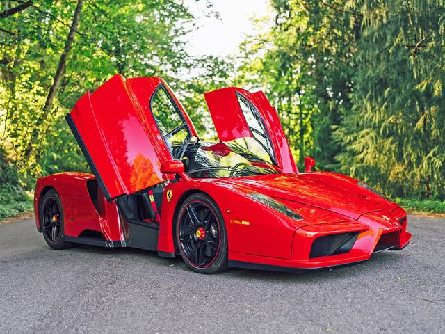
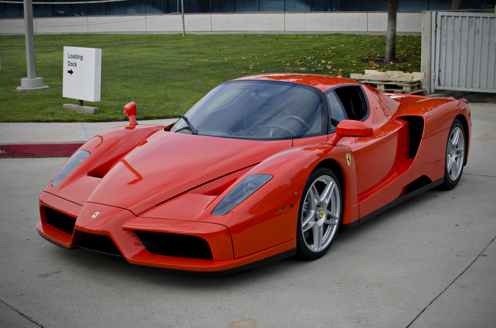

The F50, whose engine directly derived from the one used in the 1990 single-seater, left its mark by bringing Formula 1 technology to the road. The Enzo, on the other hand, went down in history as the link between racing know-how and road use. As a result, many of the Enzo's cutting-edge solutions went on to appear in subsequent Ferrari models, such as its incredibly light compact V12, carbon fibre brake discs, human-machine interface, and aerodynamic features.


Its rear-mounted gearbox connects directly to the engine with just the F1 version available. Gear change time was cut to 150 milliseconds as a priority for maximum sportiness, also thanks to the electronic control with levers behind the steering wheel.Enzo FerrariBrembo specifically developed the braking system, which features CCM (Carbon-Ceramic Material) discs. This was the first time they had been fitted to a Ferrari road car despite many years use by the Formula 1 Scuderia. They contributed decisively to the benchmark braking performance results delivered by the Enzo across the board.